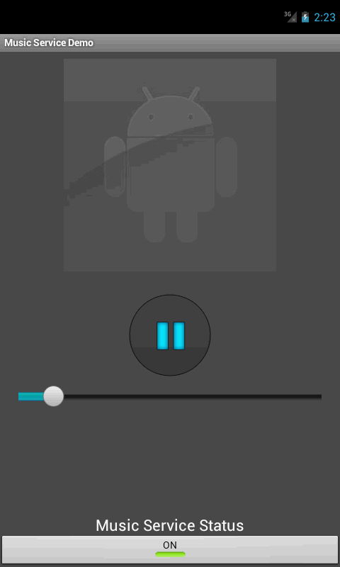

This extended lab shows how to create a bound service, including how to bind to the service from other application components. However, you should also refer to the Services document for additional information about services in general, such as how to deliver notifications from a service, set the service to run in the foreground, and more.
A bound service is an implementation of the Service class that allows
other applications to bind to it and interact with it. To provide binding for a
service, you must implement the onBind() callback method. This
method returns an IBinder object that defines the programming interface that
clients can use to interact with the service.
A client can bind to the service by calling bindService(). When it does, it must provide an implementation of ServiceConnection, which monitors the connection with the service. The bindService() method returns immediately without a value, but
when the Android system creates the connection between the
client and service, it calls onServiceConnected() on the ServiceConnection, to deliver the IBinder that
the client can use to communicate with the service.
Multiple clients can connect to the service at once. However, the system calls your service's
onBind() method to retrieve the IBinder only
when the first client binds. The system then delivers the same IBinder to any
additional clients that bind, without calling onBind() again.
When you implement your bound service, the most important part is defining the interface
that your onBind() callback method returns. There are a few
different ways you can define your service's IBinder interface and the following
section discusses each technique.
For Activities and Services used in one application the Binder solution is recommended. After binding with the service, the Binder will allow the activity (or other class bound to the service) to call any public method of the service.
First the service must define a class extending the Binder class and create an instance of it. In the following example, it is called LocalBinder. Reference to this instance will be exchanged with an activity. The LocalBinder may return the instance of enclosing Service class or contain public methods that Activity could call.
In our example the LocalBinder will just return the reference to MusicService instance:
public class MusicService extends Service {
/**
* Local Binder returned when binding with Activity. This binder will return
* the enclosing MusicService instance.
*/
public class LocalBinder extends Binder {
/**
* Return enclosing MusicService instance
*/
MusicService getService() {
return MusicService.this;
}
}
private final IBinder mBinder = new LocalBinder();
}When client (activity) will bind to the service we will return the instance of LocalBinder:
@Override
public IBinder onBind(Intent intent) {
return mBinder;
}
The service will also define a public method which could be called by client. In our example we will retune the internal media player instance:
/**
* Public method which can be called from bound clients.
*
* This method will return Media Player.
*/
public MediaPlayer getMediaPlayer() {
return mp;
}
This activity will hold a reference to the service:
public class MusicPlayerActivity extends Activity {
/**
* Reference to our bound service.
*/
MusicService mService = null;
}
The field mService is initialized on successful connection to the service. This is done by an instance of class ServiceConnection, an object for managing the connection:
/**
* Class for interacting with the main interface of the service.
*/
private ServiceConnection mConn = new ServiceConnection() {
@Override
public void onServiceConnected(ComponentName className, IBinder binder) {
Log.d(TAG, "Connected to service.");
mService = ((MusicService.LocalBinder) binder).getService();
}
@Override
public void onServiceDisconnected(ComponentName className) {
Log.d(TAG, "Disconnected from service.");
mService = null;
}
};
In ServiceConnection we override the method onServiceConnected(). This method is called after successful connection to the service. The onServiceConnected() calls LocalBinder.getService() to obtain the reference to the service. The Local Music Service was described in the previous section "Music Service".
For an Activity to communicate with a service, the activity must first bind to the service, for example in the onStart() method:
@Override
protected void onStart() {
super.onStart();
bindService(new Intent(this, MusicService.class), mConn,
Context.BIND_AUTO_CREATE);
}
It must also unbind in the onStop() method:
@Override
protected void onStop() {
super.onStop();
unbindService(mConn);
}
After successfully binding to the service, the activity obtains a valid reference to the MusicService instance.
Download the code from here and play around with it to see how things are working for this player.

You have to add a label for the total duration of the song and the duration at which song is currently being played. To help you convert duration into hh:mm:ss, there is a function milliSecondsToTimer inside class Utilities. This function converts the time in milliseconds to string in "hh:mm:ss" format. Also look into the MusicPlayerActivity where progress bar is updated using a thread. You can use thread to update the label of played song duration label (hint: these values are already calculated for you inside this thread).
You can use following code to create label for song duration:
<!-- Timer Display -->
<LinearLayout
android:id="@+id/timerDisplay"
android:layout_above="@id/songProgressBar"
android:layout_width="fill_parent"
android:layout_height="wrap_content"
android:layout_marginRight="20dp"
android:layout_marginLeft="20dp"
android:layout_marginBottom="10dp">
<!-- Current Duration Label -->
<TextView
android:id="@+id/songCurrentDurationLabel"
android:layout_width="fill_parent"
android:layout_height="wrap_content"
android:layout_weight="1"
android:gravity="left"
android:textColor="#eeeeee"
android:textStyle="bold"/>
<!-- Total Duration Label -->
<TextView
android:id="@+id/songTotalDurationLabel"
android:layout_width="fill_parent"
android:layout_height="wrap_content"
android:layout_weight="1"
android:gravity="right"
android:textColor="#04cbde"
android:textStyle="bold"/>
</LinearLayout>
Your app after modification should look something like this:
The recommended method of communication between Activities and Services for different applications' Inter-Process Communication (IPC) is by using Messengers. In this case, the service defines a handler for different incoming messages. This handler is then used in Messenger for transferring data via messages. To get bi-directional communication, the activity also has to register a Messenger and Handler. This Messenger is passed to the service in one of messages. Without this the service wouldn't know to who it should respond.
To see more on how to use Messenger for communication, see this link.